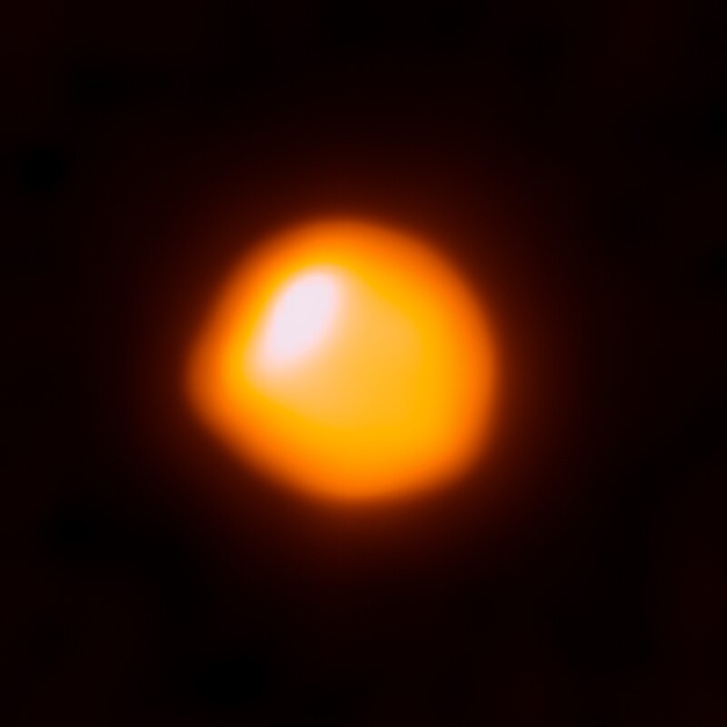

Betelgeuse
Betelgeuse, también llamada α Orionis, es una estrella brillante del tipo supergigante roja. Se halla en la constelación de Orión y es la novena estrella más brillante en el cielo. Su color característico proviene de las bajas temperaturas de su superficie (unos 3000 K). El estado evolutivo de la estrella es avanzado: ha pasado ya la etapa más importante de su vida, la secuencia principal, agotado ya el combustible en su núcleo que le proporcionaba energía (por fusión del hidrógeno), después de lo cual aumentó su tamaño hasta las enormes dimensiones actuales. Sus variaciones de luminosidad son propias de su presente como estrella gigante. La temperatura superficial de Betelgeuse es relativamente baja, pese a lo cual, al ser una estrella supergigante, su brillo es muy elevado. Aunque es la estrella α de Orión, no es la más brillante de la constelación en luz visible, ya que Rígel (β Orionis) la supera en este aspecto; pero en luz roja e infrarroja cercana, Betelgeuse sí es la más brillante. |
 |
Etimología
Posición de Betelgeuse en Orión.
El nombre original se especula que procede de يد الجوزا, (transcrita como yad al-jawzā, o sea ‘la mano de Jauza’), siendo Jauza una figura mitológica de sexo femenino, inicialmente identificada por los antiguos árabes en el firmamento con Géminis y posteriormente asociada con la constelación de Orión, el cazador. Durante la Edad Media, cuando el nombre de la estrella fue transcrito al latín, el carácter arábigo inicial, "Ya" (ي) de sonido "y", fue malinterpretado como una "Ba" (ب), de sonido "b", debido probablemente a que la escritura árabe permite que "Ya" altere su grafía en los inicios de palabra, y "Yad al-Jauza" se convirtió en "Bedalgeuze" /ˈbɛtəldʒuːz, ˈbiːtəl-, -dʒuːs/.
En la edición veneciana de 1492 de las Tablas Alfonsíes —intitulada Tabule astronomice Alfonsi Regis— aparece como «Beldelgenze».3
Más tarde, durante el Renacimiento, se especuló entre los eruditos occidentales que el nombre original habría sido "Bait al-Jauza", cuyo significado se pretendía que fuera "hombro de Jauza" en árabe, lo que condujo a la forma actual "Betelgeuse"; aun así, la forma correcta de "hombro" en árabe sería كتف (katf).
Pronunciación del nombre «Betelgeuse»
Se pronuncia, naturalmente, tal y como se escribe. Los especialistas del lenguaje representan la pronunciación así: /beteljéuse/. Otras pronunciaciones originarias de otros idiomas pertenecen a tales idiomas extranjeros, y no al español.4
Características principales
Comparación de tamaño que muestra a Betelgeuse en comparación con la supergigante roja más pequeña Antares y con S Doradus, Rigel, Arturo y el Sol, todo en un color cercano al verdadero.
Betelgeuse es una estrella muy grande, luminosa pero de temperatura media clasificada como M1-2 Ia-ab supergigante roja. La letra "M" en esta designación significa que es una estrella roja perteneciente a la estrella clase espectral M y por lo tanto tiene una temperatura fotosférica relativamente baja; El sufijo "Ia-ab", en el esquema de clasificación espectral de Yerkes, indica que es una supergigante de luminosidad intermedia, con propiedades a medio camino entre una supergigante normal y una supergigante luminosa. Desde 1943, el espectro de Betelgeuse ha servido como uno de los puntos de anclaje estable por el cual otras estrellas se clasifican.5
Betelgeuse fue la primera estrella cuyo diámetro pudo ser medido con alguna exactitud utilizando técnicas interferométricas; su diámetro se ubica entre los 850 y los 905 millones de kilómetros. En su tamaño máximo la estrella se extendería hasta más allá de la órbita de Marte. Su masa es 20 veces la masa del Sol. Los astrofísicos predicen que Betelgeuse explotará como supernova de tipo II al final de su vida. Algunos de ellos afirman, basándose en la variabilidad mostrada por la estrella, que tal explosión podría producirse en un plazo de tiempo muy cercano (en los próximos miles de años). Otros astrofísicos son más conservadores y piensan que podría continuar con su actividad actual durante un período mucho mayor.
Recientes estudios muestran que, durante los últimos quince años, el diámetro de Betelgeuse ha encogido un 15%, desconociéndose las razones de este fenómeno.67 Otros muestran que tiene una forma algo ovalada.El disco de Betelgeuse ha podido ser resuelto mediante el uso del telescopio VLT, mostrando la mejor imagen que se tiene de la estrella hasta la fecha.8 A diferencia de estrellas como nuestro Sol, en la cual la superficie de la estrella está cubierta por multitud de gránulos (células convectivas), en estrellas gigantes y supergigantes rojas como Betelgeuse únicamente hay un pequeño número de ellos, siendo estas estructuras las responsables de las variaciones de brillo que se pueden observar en esos tipos de astros.910
Betelgeuse está rodeada por una nebulosa de aspecto complejo formada por silicatos y polvo expulsados por la estrella en erupciones estelares y convección en su atmósfera, y que se extiende hasta a una distancia de 400 unidades astronómicas.11
Betelgeuse, finalmente, es una estrella fugitiva que ha sido expulsada de la asociación estelar Orión OB1.
Todavía se debate qué parte del espectro electromagnético (visible, infrarrojo cercano (NIR) o infrarrojo medio (MIR)) produce la medición angular más precisa. En 1996, se demostró que Betelgeuse tenía un disco uniforme de 56.6 ± 1.0 mas. En 2000, el equipo de SSL produjo otra medida de 54,7 ± 0,3 mas, ignorando cualquier posible contribución de los puntos críticos, que son menos notables en el infrarrojo medio. También se incluyó una asignación teórica para el oscurecimiento de las extremidades, produciendo un diámetro de 55.2 ± 0.5 más. La estimación anterior equivale a un radio de aproximadamente 5,6 UA o 1200 R☉, suponiendo la distancia Harper 2008 de 197.0 ± 45 pc, una cifra aproximadamente del tamaño de la órbita joviana de 5,5 UA, publicada en 2009 en Astronomy Magazine y un año después en la imagen de astronomía del día de la NASA.1213
En 2004, un equipo de astrónomos que trabajaban en el infrarrojo cercano anunció que la medición fotosférica más precisa era 43.33 ± 0.04 más. El estudio también presentó una explicación de por qué las longitudes de onda variables desde el visible hasta el infrarrojo medio producen diámetros diferentes: la estrella se ve a través de una atmósfera gruesa y cálida extendida. A longitudes de onda cortas (el espectro visible) la atmósfera dispersa la luz, aumentando así ligeramente el diámetro de la estrella. A longitudes de onda del infrarrojo cercano (bandas K y L), la dispersión es insignificante, por lo que la fotosfera clásica se puede ver directamente; en el infrarrojo medio, la dispersión aumenta una vez más, causando que la emisión térmica de la atmósfera cálida aumente el diámetro aparente.
Los estudios con IOTA y VLTI publicados en 2009 brindaron un fuerte apoyo al análisis de Perrin y arrojaron diámetros que oscilaron entre 42.57 y 44.28 mas con márgenes de error comparativamente insignificantes.1415 En 2011, una tercera estimación en el infrarrojo cercano que corrobora los números de 2009, esta vez mostrando un diámetro de disco oscurecido de 42.49 ± 0.06 más.16 En consecuencia, si se combina la menor distancia de Hipparcos de van Leeuwen de 152 ± 20 pc con la medición angular de Perrin de 43.33 mas, una estimación fotosférica del infrarrojo cercano equivaldría a aproximadamente 3.4 UA o 730 R☉.17 Un artículo de 2014 deriva un diámetro angular de 42.28 mas (equivalente a un disco uniforme de 41.01 mas) usando observaciones de banda H y K hechas con el instrumento VLTI AMBER.18
En el centro de esta discusión, en 2009 se anunció que el radio de Betelgeuse se había reducido de 1993 a 2009 en un 15%, con la medición angular de 2008 igual a 47,0 mas, no muy lejos de la estimación de Perrin.19 A diferencia de la mayoría de los trabajos anteriores, este estudio abarcó un período de 15 años en una longitud de onda específica. Los estudios anteriores generalmente han durado uno o dos años en comparación y han explorado múltiples longitudes de onda, a menudo arrojando resultados muy diferentes. La disminución en el tamaño aparente de Betelgeuse equivale a un rango de valores entre 56,0 ± 0,1 más visto en 1993 a 47 ± 0.1 más visto en 2008, una contracción de casi 0,9 UA en 15 años. Lo que no se sabe completamente es si esta observación es evidencia de una expansión y contracción rítmica de la fotosfera de la estrella como los astrónomos han teorizado, y si es así, cuál podría ser el ciclo periódico, aunque Townes sugirió que si existe un ciclo, probablemente sea unas pocas décadas. Otras posibles explicaciones son las protuberancias fotosféricas debido a la convección o una estrella que no es esférica sino asimétrica, causando la aparición de expansión y contracción a medida que la estrella gira sobre su eje.20
Futuro de Betelgeuse
Imagen infrarroja de Betelgeuse, Meissa y Bellatrix con nebulosas circundantes.
Posible vista de la constelación de Orión cuando Betelgeuse explote.
Los astrónomos predicen que Betelgeuse se convertirá, finalmente, en una supernova de Tipo II, aunque es posible que su masa sea lo suficientemente baja para dejar tras de sí una rara enana blanca de oxígeno y neón, no una estrella de neutrones. Hay división de opiniones sobre el tiempo que tardará en ocurrir este evento: aunque Betelgeuse tiene aproximadamente 10 millones de años de edad,1 pero que debido a su gran masa ha evolucionado rápidamente, algunos señalan que la actual variabilidad de la estrella indicaría que está en la fase de "quema" (fusión) del carbono de su ciclo de vida y, por lo tanto, explotará en algún punto de los próximos 100 000 años.21 Los escépticos disienten de este cálculo y creen que la estrella podría sobrevivir mucho más, en torno a 10 millones de años.22
te puede interesar